일반 치과 진료 ㅣ 예방 진료
치아는 치료하는 것보다 지키는 것이 훨씬 중요한 기준입니다
아름결치과는 자연치아를 보존합니다
닫기
MINTCL BUILDING 5F, 123 TEHERAN-RO,
GANGNAM-GU, SEOUL
서울특별시 강남구 테헤란로 123 민트클빌딩 5층
일반 치과 진료 ㅣ 예방 진료
치아는 치료하는 것보다 지키는 것이 훨씬 중요한 기준입니다
아름결치과는 자연치아를 보존합니다
충치/근관치료 01
건강한 치아,
아프지 않을 때 지켜야 드립니다.
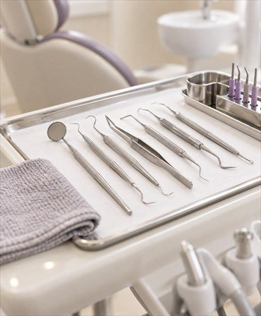
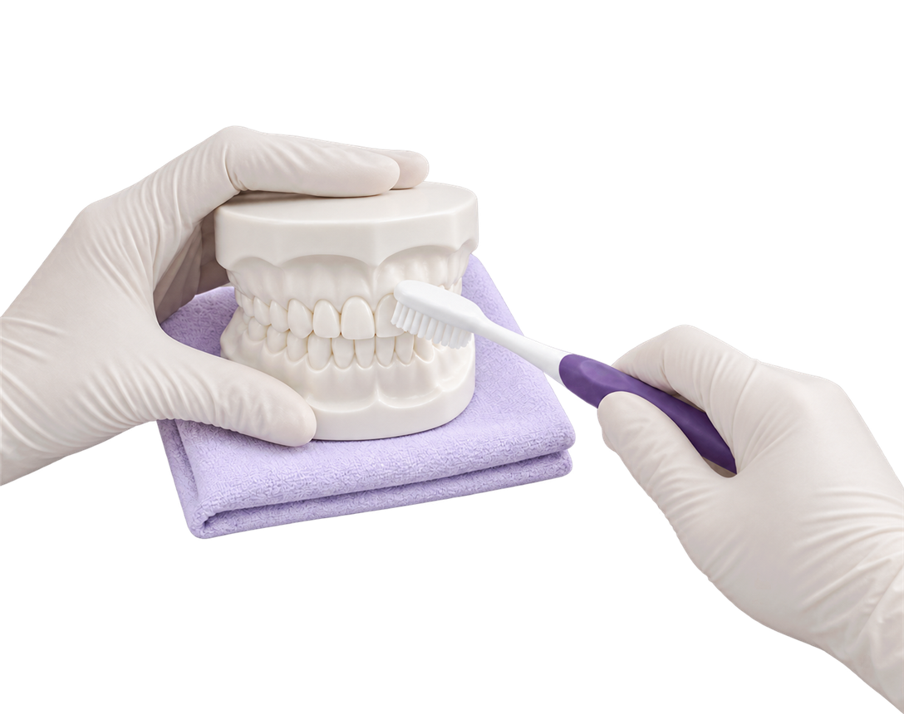
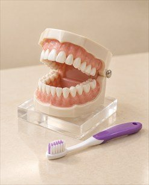
아름결치과는
3차원 CT 장비로 정밀하게 충치를 진단하고,
미세현미경으로 20배 정확하게
근관치료를 완성합니다.
정기적인 검진과 정확한 진단을 활용해 문제를 파악하고
적절한 치료를 받아야 자연치아를 더 건강하게 유지할 수 있습니다.
아름결치과는 3차원 CT 장비로
정밀하게 충치를 진단하고, 미세현미경으로
20배 정확하게 근관치료를 완성합니다.
정기적인 검진과 정확한 진단을 활용해 문제를 파악하고
적절한 치료를 받아야 자연치아를 더 건강하게 유지할 수 있습니다.
반점치 치료 02
얼룩덜룩한 반점치(백색반점) 치아 진료
치아 삭제가 고민된다면?
아름결치과에서는
치아삭제 없이도 치료가 할 수 있습니다.
[실제 아름결치과 반점치 치료영상 ]
치아 표면이 하얗게 얼룩덜룩해지는 경우를 반점치 치아라고 부릅니다.
충치에 의해 부식된 치아 내부의 작은 기포같은 공간들이 빛의 산란을 야기해서 희게 보이는 것 으로 안내합니다.
이 같은 경우는 저점도 레진을 침투시키는 진료법으로 치아삭제 없이 완성도 높은 진료가 가능합니다.
충치에 의해 부식된 치아 내부의 작은 기포같은 공간들이
빛의 산란을 야기해서 희게 보이는 것 으로 안내합니다.
이 같은 경우는 저점도 레진을 침투시키는 진료법으로
치아삭제 없이 완성도 높은 치료가 할 수 있습니다.
하지만 아름결치과에서는 치아삭제 없는 침투 레진 진료로
자연치아를 최관한 보존하고 심미적으로도 완성도 높은 반점치 진료가 할 수 있습니다.
하지만 아름결치과에서는 치아삭제 없는
침투 레진 진료로 자연치아를 최관한 보존하고
심미적으로도 완성도 높은 반점치 진료가 할 수 있습니다.
AREUM SPECIAL
치아삭제 없는 침투 레진 진료, 어떤 진료인가요?
치아를 삭제하지 않고 저점도 레진을 치아에 침투 시켜
반점치 치아를 진료하는 침투 레진 진료
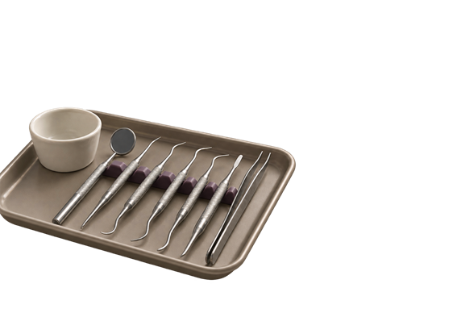
INFILTRATION
AREUM SPECIAL
치아삭제 없는 침투 레진 진료, 어떤 진료인가요?
치아를 삭제하지 않고
저점도 레진을 치아에 침투시켜
반점치 치아를 진료하는 침투 레진 진료
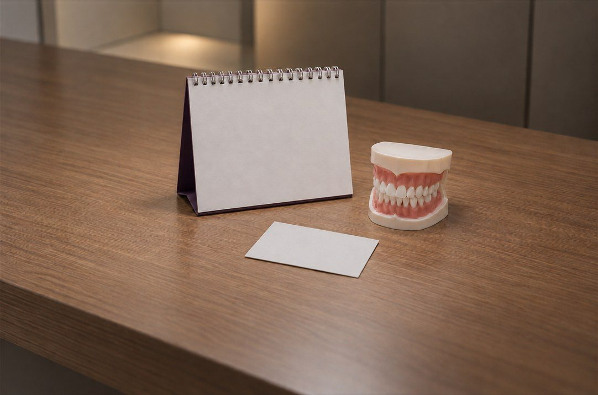
INFILTRATION
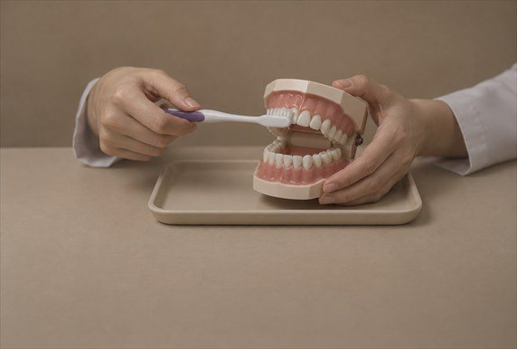
김진수대표원장은
숙련된 치과 의사가 시행하는 침투 레진 반점치 진료를
약 10년전부터 시행하면서 다수의 케이스를 보유하고 있으며,
치과 의사들에게 소개하고 가르치는
국내 침투 레진 반점치 진료법을 연구하는 술자입니다.
김진수대표원장은
숙련된 치과 의사가 시행하는 침투 레진 진료
반점치 진료를 약 10년전부터 시행하면서
다수의 케이스를 보유하고 있으며,
치과 의사들에게 소개하고 가르치는
국내 침투 레진 반점치 진료법을 연구하는 술자입니다.
Before & After
얼룩덜룩 반점치(백색반점),
치아삭제 없이도 눈에 띄게
좋아질 수 있습니다.
01 20대 여성 ㅣ 흰색반점(반점치) ㅣ 침투 레진 진료 ㅣ 소요시간 15분
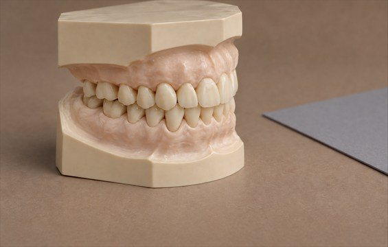
2023.01.02
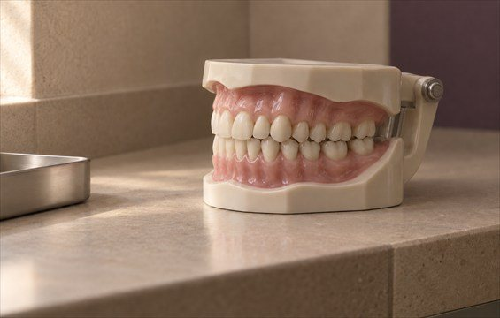
2023.04.05
02 50대 남성 ㅣ 흰색반점(반점치) ㅣ 침투 레진 진료 ㅣ 소요시간 15분
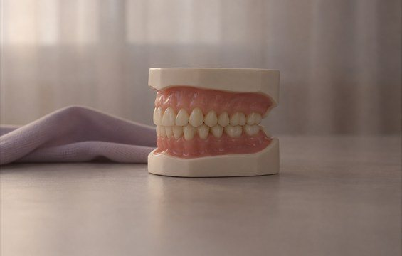
2020.11.06
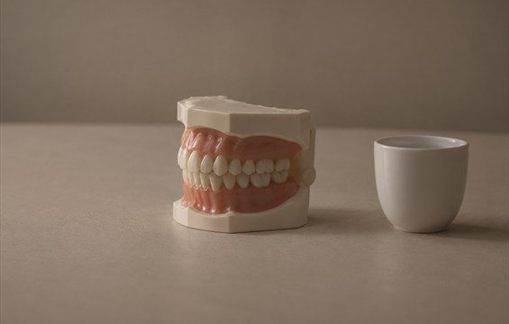
2021.02.01
03 40대 남성 ㅣ 흰색반점(반점치) ㅣ 침투 레진 진료 ㅣ 소요시간 15분
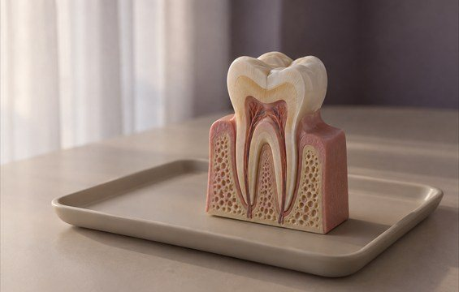
2020.12.07
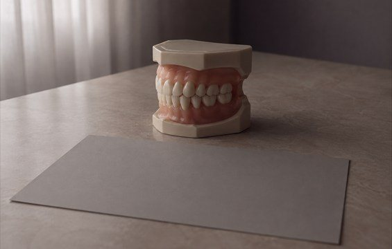
2021.01.15
04 40대 여성 ㅣ 흰색반점(반점치) ㅣ 침투 레진 진료 ㅣ 소요시간 15분
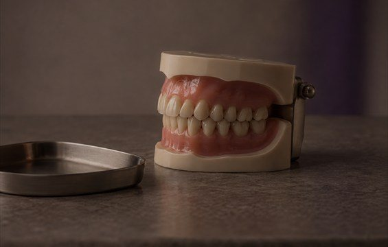
2021.01.06
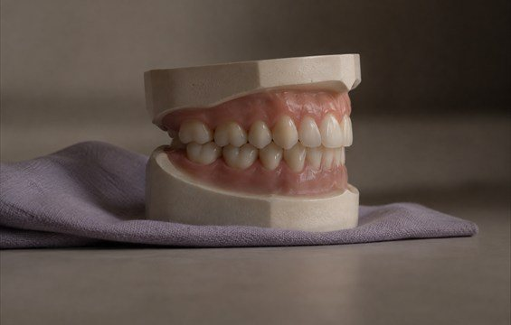
2021.02.04
모든 치료사례 전후사진은 내원하신 분의 동의하에 촬영되었습니다.
모든사진은 동일 내원하신 분의 전후모습을 촬영하였으며, 사진의 밝기조절 외에 임의 수정이 없음을 알려드립니다.
모든 치료는 부작용의 우려가 있기때문에 의사와의 충분한 상담후에 치료가 진행이루어집니다.
모든 치료사례 전후사진은 내원하신 분의 동의하에 촬영되었습니다.
모든사진은 동일 내원하신 분의 전후모습을 촬영하였으며, 사진의 밝기조절 외에
임의 수정이 없음을 알려드립니다. 모든 진료는 부작용의 우려가 있기때문에
의사와의 충분한 상담후에 치료가 진행이루어집니다.
치주 치료 03
자연치아를 오래도록 튼튼하게, 잇몸치료
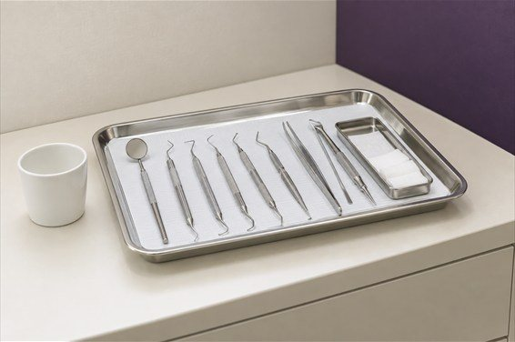
치아 주변 환경을 개선하는 잇몸치료
치주질환이란 잇몸, 치조골 등 치아 주위 조직에 염증이 생긴 것을 말하며,
치주 치료는 염증의 원인이 되는 치태와 치석을 제거하고
정기적으로 치아 주변의 잇몸 질환을 예방하는 것을 말합니다.
이런 경우 잇몸치료가 필요합니다.
치아교정 04
오랜시간이 걸리는 치아교정은
처음부터 체계적이어야 합니다.
아름결치과의 치아교정은
3차원 CT촬영을 통한 정확한 진단부터 시작이루어집니다.
STEP 1
3차원 3D CT촬영을 통한
치아 배열 및 상태점검
STEP 2
유아교정부터
비발치 교정까지
풍부한 임상경험을 보유한
진료진의 1:1 맞춤 교정 진행
유아교정부터 비발치 교정까지
풍부한 임상경험을 보유한
진료진의 1:1 맞춤 교정 진행
STEP 3
상담부터 관리까지
체계적 교정시스템
예방 진료 05
가장 앞선 치료는 예방입니다.
아름결치과가 건강한 치아를 보존하는 방법
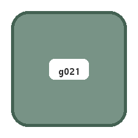
정기검진과 스케일링
스케일링을 활용해 치주질환의 원인인
플라그와 치석을 제거해
충치와 치주질환을 예방드립니다.
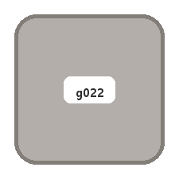
올바른 칫솔선택 교육
구강보건교육 및 지도
전문가가 올바른 칫솔을 선택하는
방법에서부터 바른 칫솔질까지 스스로
구강 건강을 지키는 방법을 교육드립니다.
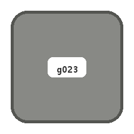
전문가 불소도포
불소도포는 치아 표면에 불소를 도포하여
산성으로부터 치아를 보호하고 단단하게
만들어주어 충치발생 위험을 낮출 수 있습니다.
AREUM SPECIAL
잘못된 스케일링이 치아를 손상시킬 수 있다는 사실, 알고계셨나요?
아름결치과는 스케일링 시 치아에 영향을 주지 않고
이 시림등의 자극이 적은 미세분사 세정 장비 장비를 활용합니다.
미세분사 장비는 나노파우더를 물과 공기의 힘으로 분사하여 치석을 제거하는 장비로
정밀한 분사와 온도조절이 가능하여 스케일링시 불편함을 최소화합니다.
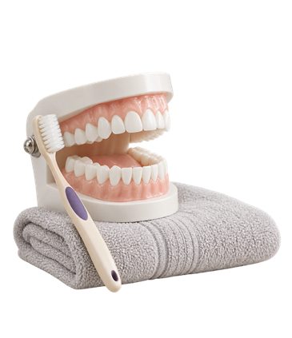
MICRO AIR CLEANING
AREUM SPECIAL
잘못된 스케일링이 치아를 손상시킬 수 있다는 사실,
알고계셨나요?
아름결치과는 스케일링 시
치아에 영향을 주지 않고 이 시림등의 자극이 적은
미세분사 세정 장비 장비를 활용합니다.
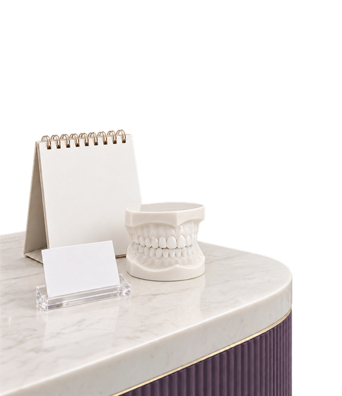
MICRO AIR CLEANING
미세분사 장비는 나노파우더를 물과 공기의 힘으로 분사하여
치석을 제거하는 장비로 정밀한 분사와 온도조절이 가능하여
스케일링시 불편함을 최소화합니다.
Q & A
스케일링에 관한 궁금증
아름결치과가 풀어드립니다.
스케일링 치료를 활용해 그간 치아에 덮여있던 치아의 표면이 노출되어 일시적으로 시린 증상이 느껴지는 것일 뿐,
대부분 2~3일 안으로 없어지므로 크게 걱정하지 않으셔도 이루어집니다.
스케일링은 양치질로 완벽하게 제거하지 못하는 부분들을 이중으로 깔끔하게 제거하는 치료으로 안내합니다.
스케일링으로 충치나 치주질환을 예방할 수 있기 때문에, 경우에 따라 다르나
6개월에 한번 정도 정기적으로 받아주시는 편이 좋습니다.
치석이 쌓여 있던 공간과 치석 때문에 생겼던 잇몸병으로 부어있던 잇몸이 나아가는 과정에서
비어보이는 경우가 있으나 잇몸병이 나아가는 정상적인 치유과정이므로 걱정하지 않으셔도 이루어집니다.
2026 프리미엄 치과 웹 템플릿
※ 본 사이트와 디자인 및 콘텐츠는 저작권법에 의해 보호되며, 무단 복제 및 도용 시 법적 책임을 물을 수 있습니다